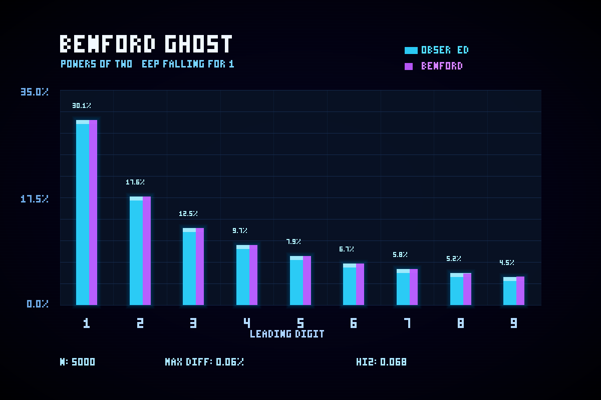

// 假设HYPOTHESIS
看似规规矩矩的数列 2^n，首位数字会不会并不是平均分布，而是悄悄服从本福特定律？也就是说，1 作为首位会远比 9 更常见。只统计前 5000 个 2 的幂，这种偏斜会不会已经肉眼可见，并且几乎贴合理论值？
Could the seemingly orderly sequence 2^n have leading digits that are not uniformly distributed at all, but instead secretly follow Benford's Law — with 1 appearing far more often than 9? If we count only the first 5,000 powers of two, will that skew already be visible and nearly identical to theory?
// 方法METHOD
不直接生成天文数字般巨大的 2^n，而是利用对数技巧：取 n·log10(2) 的小数部分，再计算 10^frac 的整数部分即可得到首位数字。对 n=1..5000 全部统计，得到 1~9 的观测频率；再与本福特定律 P(d)=log10(1+1/d) 的理论值逐项对比。最后用纯 Python 手写 PNG 编码器绘制双柱图：青色表示观测值，紫色表示理论值，全程零外部依赖。
Instead of constructing astronomically huge values of 2^n directly, use a logarithmic trick: take the fractional part of n·log10(2), then compute the integer part of 10^frac to recover the leading digit. Count all n=1..5000 to get observed frequencies for digits 1–9, then compare them against Benford's Law P(d)=log10(1+1/d). Finally render a dual-bar chart with a pure-Python hand-rolled PNG encoder: cyan for observed values, purple for theory, with zero external dependencies throughout.
// 结果RESULT
成功 ✅ — 前 5000 个 2 的幂几乎像被本福特幽灵附体：首位为 1 的比例高达 30.10%，首位为 9 只有 4.52%，和『1 最常见、9 最罕见』的理论预言完全一致。9 个数字里最大的观测偏差只有 0.0557 个百分点，卡方统计量仅 0.0677，几乎贴着理论曲线飞行。最诡异的地方在于：2^n 明明是最整齐的指数增长序列之一，却天然长出了一种看似『造假数据』才会有的首位偏斜。这说明本福特定律不是数据脏，而是对数世界在偷偷漏出指纹。
SUCCESS ✅ — The first 5,000 powers of two look almost possessed by the Benford ghost: 30.10% begin with 1, while only 4.52% begin with 9, matching the theory's prediction that 1 should dominate and 9 should be rarest. Across all nine digits, the largest deviation is only 0.0557 percentage points, and the chi-square statistic is just 0.0677 — practically glued to the theoretical curve. The eerie part is that 2^n is one of the cleanest exponential sequences imaginable, yet it naturally grows the same leading-digit skew people often associate with 'fake-looking' data. Benford isn't dirty data — it's the logarithmic world leaking fingerprints.
// 产出ARTIFACT

🔍 点击放大Click to enlarge
← 返回实验列表BACK TO EXPERIMENTS